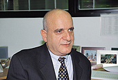

韩国特固克(TAEGUTEC)
- Home
- 投资优势
- 外商投资企业的成功事例
- 韩国特固克(TAEGUTEC)
韩国特固克（TAEGUTEC）
公司介绍
世界上唯一具备“钨连贯生产体系”的“韩国特固克(株)”是韩国国内最大的生产草耕刀削工具与相关产品的“钨制造专门企业”，出口量占国内生产量的 60%以上。韩国特固克的总公司是以色列的“ISCAR”集团。作为地方代表性的外资企业，它被评为“兼备集团市场能力和生产能力”的优秀企业。另外，它在欧洲、亚洲、美洲大陆等 12 个国家有海外分社，以及遍及全世界各地的80多个专门代理点，同时在印度、中国还运营着工厂。
一般现况
- 投资国家/投资企业：以色列/ISCAR
- 成立年度：1998 年 8 月
- 法人（总裁）代表： Moshe Sharon
- 员工人数：900名
- 主要产品：钨碳化物刀削工具、陶瓷刀削工具等
- 地址：大邱广域市 达城郡 嘉昌面 龙溪里 304号
发展历史
- 1952 年 09 月：成立大韩重石(株)
- 1998 年 08 月：被以色列 ISCAR 公司收购，并把公司名称改为“韩国特固克(TaeguTec Ltd)”
- 1999 年 02 月：总公司搬迁到大邱
竞争力与前景
特固克强有力的竞争力体现在企业高水平的生产设备、优秀的人才工作系统和全球性营销。另外，占总体员工 10% 的研究开发人才在企业最大规模的综合技术研究所内努力从事研究开发工作。 再加上，2000 年投入生产的印度工厂正调配收购当地所有的销售量。此外，他们还希望通过扩建生产工厂和扩充海外营业网，能够进入世界十强工具品牌榜。